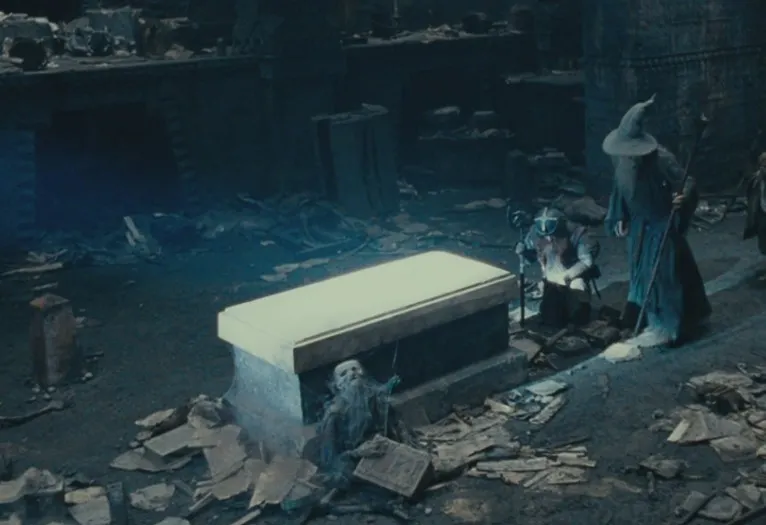

Balin's Tomb

You enter a large room with a single pillar of light illuminating a tomb of white marble. Carved into the stone are a set of runes that read:
BALIN SON OF FUNDIN
LORD OF MORIA
Skeletons of dwarven warriors surround the tomb, notched axes and broken swords lay among them.